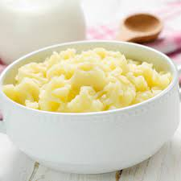

Potatoes

Description
Ingredients:
- Potatoes
- Milk
- salt
- pepper
- Potatoe masher/Electric beater
- Preferably a hobbit to do it for you
Steps:
- Boil em
- Bring a pot of salted water to a boil
- Add potatoes and cook until tender but still firm,
- Wait about 15 minutes
- drain
- Mash em
- Using a potato masher or electric beater, slowly blend milk mixture into potatoes until smooth and creamy
- Season with salt and pepper to taste
- Stick em in a stew
Return to main page